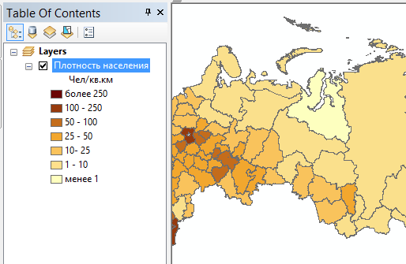
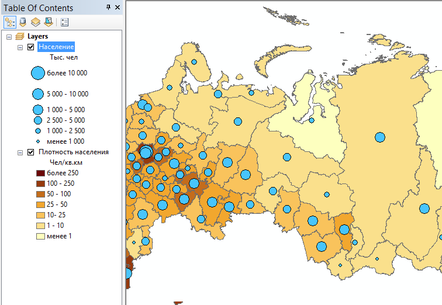
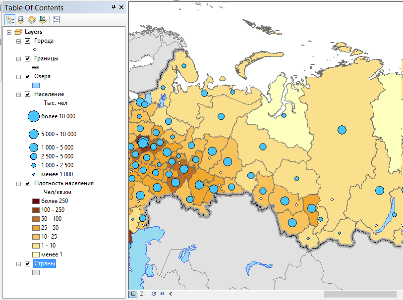
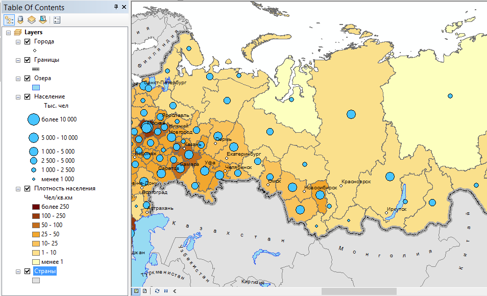
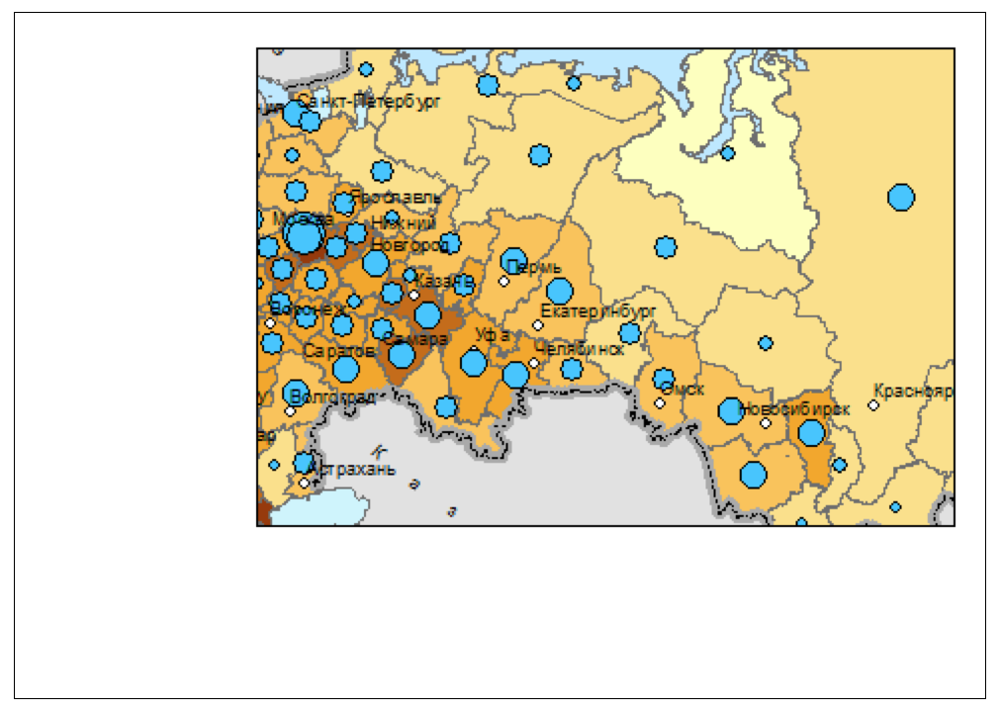
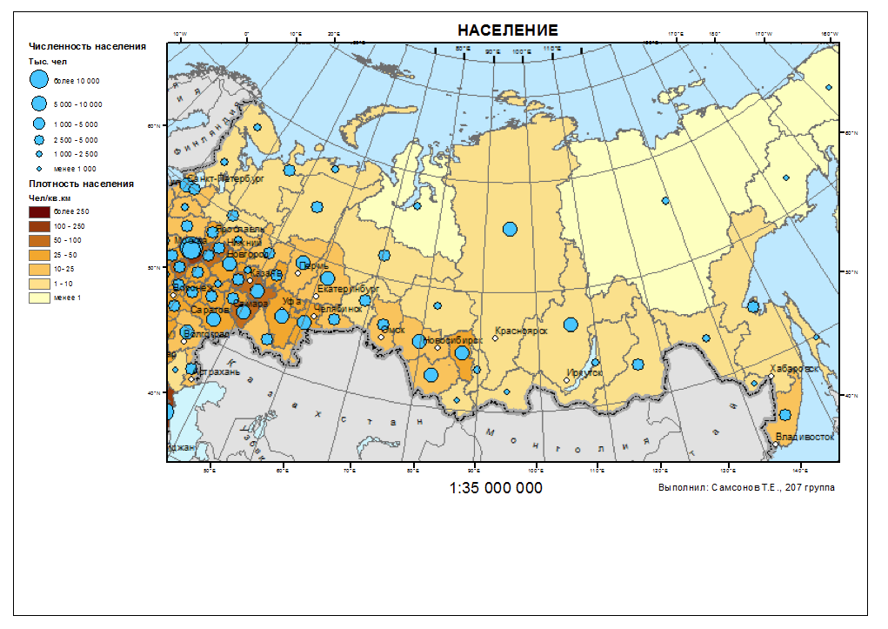

Упражнение 4 Социально-экономическая карта
4.1 Введение
Цель задания — знакомство с моделями пространственных объектов и базой пространственных данных. Визуализация данных на карте. Оформление легенды и компоновки карты.
| Параметр | Значение |
|---|---|
| Теоретическая подготовка | Модели пространственных данных, модели пространственных объектов, базы пространственных объектов, картографические проекции |
| Практическая подготовка | Не требуется |
| Исходные данные | Сетка субъектов Федерации с привязанной статистикой по населению, государственная граница России, крупнейшие города России, крупнейшие озера, страны. |
| Результат | Тематическая карта «Население России» масштаба 1:35 000 000 |
| Ключевые слова | Модели пространственных данных, модели пространственных объектов, базы пространственных данных, классы пространственных объектов, визуализация пространственных данных, геоинформационное картографирование |
4.1.1 Контрольный лист
- Добавить на карту слои базы пространственных данных и оформить их
- Настроить подписи объектов
- Создать компоновку карты, легенду и координатную сетку
- Экспортировать результат в графический файл
4.1.2 Аннотация
Задание посвящено знакомству с ГИС на примере создания социально-экономической карты. Вы познакомитесь с представлением площадных, линейных, точечных объектов в базе пространственных данных. Научитесь создавать карты на их основе, оформлять легенду, добавлять сетку координат и зарамочные элементы карты, познакомитесь с применением картограмм и картодиаграмм в геоинформационном картографировании.
4.2 Начало работы
Скачайте с сервера каталог Ex04 и положите его в свою директорию.
Запустите приложение ArcMap и откройте окно Сatalog, нажав кнопку
 на панели инструментов.
на панели инструментов.-
Подключитесь к рабочему каталогу Ex04 в окне Сatalog (Рис. 4.1):

Рис. 4.1: Окно Catalog
В каталоге Ex04 находится база геоданных MapData.gdb, содержащая исходные данные для выполнения задания.
База геоданных — это структурированное хранилище, внутри которого можно создавать слои данных, группировать их и связывать различными отношениями.
Внутри базы геоданных могут быть объекты следующих типов:
-


 — слои векторных данных (классы пространственных объектов),
— слои векторных данных (классы пространственных объектов), -
 — слои растровых данных;
— слои растровых данных; -
 — обычные таблицы;
— обычные таблицы;
Класс пространственных объектов (feature class) — это набор пространственных объектов одного типа геометрии (точки, линии, полигоны). Для класса могут быть определены атрибуты, а его представлением является таблица, содержащая столбцы разного типа (текстовые, числовые и т.д.). Каждая строчка в таблице — это описание одного объекта.
-
-
Раскройте базу данных MapData.gdb и изучите классы пространственных объектов внутри нее:
Класс Содержание Borders Государственная граница РФ Cities Города Lakes Озера Regions Субъекты федерации Countries Страны К какому типу геометрии относятся данные классы?
-
Дважды щелкните на слое Regions и перейдите на вкладку XY Coordinate System.
Внимательно прочитайте информацию. Этот слой хранится в Географической системе координат (GCS), отнесенной к эллипсоиду WGS-1984. Это означает, что координаты каждого объекта хранятся в виде широты и долготы. Этот слой можно спроецировать в любую проекцию. При этом координаты будут представлены в метрических единицах, а система координат получит название Проецированной системы координат (PCS).
4.3 Создание картограмм
Добавьте на карту слой Regions. Для этого просто перетащите его из окна Каталога на карту.
-
Переименуйте его в «Плотность населения». Для этого дважды (медленно) щелкните на названии слоя или выделите его и нажмите клавишу F2 (Рис. 4.2):

Рис. 4.2: Переименование слоя
-
Используя инструкции в разделе Изменение проекции, измените проекцию карты на равновеликую коническую проекцию Альберса. Ее можно найти по следующему пути:
Projected Coordinate Systems > Continental > Asia > Asia North Albers Equal Area Conic
Обратите внимание на то, как изменится форма отображаемых объектов.
Откройте таблицу атрибутов слоя. Найдите в ней столбец Density, просмотрите его значения. Это поле таблицы хранит значения плотности населения по субъектам.
-
Найдите поля Shape и ObjectID.
В поле ObjectID хранится уникальный идентификатор каждого объекта. Он нужен системе для того, чтобы каждый объект можно было гарантированно найти по некому однозначному критерию.
В поле Shape хранится геометрия объектов. Если слой точечный — это будут просто пары координат X и Y для каждого объекта. Для линейных и полигональных слоев это будет уже упорядоченный набор пар координат вершин границы объекта. Геометрия редактируется специальными инструментами, поэтому содержимое поля Shape скрыто от пользователя.
Дважды щелкните на названии слоя и на вкладке Symbology и выберите способ изображения Quantity — Graduated colors (Градуированные цвета).
-
Выберите в списке Value Field поле Density, система автоматически сформирует список классов, созданных методом естественных интервалов.
Существует множество методов классификаций: равных интервалов, квантилей, стандартных отклонений и т.д. По умолчанию всегда выбирается метод естественных интервалов, т.к. считается, что он в среднем неплохо отражает особенности распределения. Следует знать, однако, что этот метод классификации плохо справляется с распределениями, обладающими значительной асимметрией и эксцессом (heavy-tail distribution).
-
Измените число классов на 7 (Рис. 4.3):

Рис. 4.3: Изменение числа классов в методе Естественных интервалов
-
Измените метод классификации. Для этого нажмите Classify. В появившемся диалоговом окне выберите в списке сверху ручной метод задания интервалов (Manual) и в правом столбце замените первые шесть значений на следующие: 1, 10, 25, 50, 100, 250. Максимальное значение оставьте без изменений. Жмите ОК (Рис. 4.4):

Рис. 4.4: Ручное редактирование границ классов
-
На вкладке Symbology выберите цветовую шкалу Yellow To Dark Red (Рис. 4.5):

Рис. 4.5: Цветовая шкала от желтого к темно-красному
-
Инвертируйте сортировку классов, чтобы наверху оказались максимальные градации (Рис. 4.6):

Рис. 4.6: Инвертирование сортировки классов
-
Инвертируйте цветовую шкалу, чтобы цвета соответствовали градациям (Рис. 4.7):

Рис. 4.7: Инвертирование цветового градиента
-
В основном диалоге настройки символов исправьте подписи классов (столбец Label) в соответствии с нижеприведенным фрагментом (Рис. 4.8):

Рис. 4.8: Редактирование подписей классов
Нажмите ОК.
-
Переименуйте показатель в «чел/кв. км» (Рис. 4.9):

Рис. 4.9: Редактирование единиц измерения
Результат (Рис. 4.10):
Рис. 4.10: Визуализация плотности населения по регионам (фрагмент карты)
Снимок экрана №1. Картограммы плотности населения
Сохраните документ карты через команду меню File > Save as в свой каталог Ex04 под названием Ex04_.mxd.
Файл с расширением
.mxdявляется файлом документа карты ArcMap. Он содержит перечень слоев и их настроек, созданные компоновки и ряд дополнительных параметров. Документ карты, как и входящие в него слои, не хранит сами данные, а лишь ссылается на них. Поэтому, перемещая проект на другой компьютер, вы должны также переместить и данные, чтобы он открылся (в вашем случае — базу геоданных, из которой вы добавляли классы объектов на карту).
4.4 Создание картодиаграмм
-
Скопируйте и вставьте слой «Плотность населения». Переименуйте его в «Численность населения» (Рис. 4.11):

Рис. 4.11: Редактирование названия слоя численности населения
Разместите новый слой поверх слоя плотности населения.
Измените его способ изображения на Картодиаграммы (Quantities > Graduated Symbols) (Градуированные символы).
Выберите для отображения поле SUM_Все_население. Появится шкала классификации показателя.
-
Измените цвет кружка на голубой. Для этого нажмите кнопку Template, выберите значок Circle 2 с тонкой обводкой и смените цвет заливки (Рис. 4.12):

Рис. 4.12: Выбор символа для построения диаграмм
-
Установите число классов равным
6(Рис. 4.13):
Рис. 4.13: Редактирование количества классов для диаграмм
-
Аналогично предыдущему слою выберите ручной метод классификации и введите следующие границы классов: \(500, 1000, 2500, 5000, 10000\). Максимальную границу оставьте прежней (Рис. 4.14):

Рис. 4.14: Редактирование границ классов для диаграмм
Нажмите ОК.
Инвертируйте порядок классов и порядок символов в классификации (аналогично предыдущему слою) так чтобы наверху оказались максимальные значения.
-
Установите на вкладке Symbology максимальный и минимальный размер значка равным 18 и 4 пункта соответственно (Рис. 4.15):

Рис. 4.15: Изменение границ размеров символа
-
Отредактируйте подписи классов по аналогии с картограммами (Рис. 4.16):

Рис. 4.16: Редактирование подписей классов размеров кружков
-
Задайте символ фона картодиаграмм в виде полигона с пустой заливкой и пустой обводкой. Для этого щелкните на кнопке Background и выберите режим No Color для заливки и для обводки (Рис. 4.17):

Рис. 4.17: Установка пустого цвета заливки и обводки полигонов
-
Нажмите ОК.
Результат (Рис. 4.18):
Рис. 4.18: Картодиаграммы численности населения
Снимок экрана №2. Картодиаграммы численности населения
Сохраните документ карты
4.5 Оформление географической основы
-
Добавьте на карту слои Borders, Cities, Countries и Lakes. Установите следующий порядок слоев в таблице содержания:
- Cities
- Borders
- Lakes
- Численность населения
- Плотность населения
- Countries
-
Переименуйте вновь добавленные слои следующим образом:
Исходное название Результирующее название Cities Города Borders Граница РФ Lakes Озера Countries Страны Присвойте слою Граница РФ единый символ Boundary, National.
Присвойте слою Озера единый символ Lake.
Измените цвет точек слоя Города на белый.
-
Установите следующие параметры оформления для площадного слоя Страны:
Параметр Значение Цвет заливки Серый 10% Цвет обводки Серый 50% Толщина обводки 1 Результат (Рис. 4.19):
Рис. 4.19: Карта с элементами общегеографической основы
Снимок экрана №3. Карта с элементами общегеографической основы
Сохраните документ карты.
4.6 Настройка подписей
-
Включите механизм размещения подписей Maplex (Рис. 4.20):

Рис. 4.20: Механизм размещения подписей Maplex
-
Включите подписи для слоя Города на вкладке Labels. Выберите в качестве поля для подписей name_2. Остальные настройки оставьте по умолчанию (Рис. 4.21):

Рис. 4.21: Диалог настройки подписей слоя Города
-
Включите подписи для слоя Страны. Настройте подписи следующим образом:
Параметр Значение Поле (label field) Название Тип размещения Криволинейное (Curved) Разрядка слов Да Разрядка букв Да Подписывать только наибольшую часть Да Результат (Рис. 4.22):
Рис. 4.22: Карта с подписями объектов
Снимок экрана №4. Карта с подписями объектов
Сохраните документ карты.
4.7 Настройка компоновки
Переключитесь в вид компоновки через команду меню View > Layout View
-
Настройте макет страницы следующим образом:
- Размер А4
- Альбомная ориентировка
Установите масштаб карты равным \(1:35 000 000\). Подгоните размер фрейма данных таким образом, чтобы он был слегка больше контура России. Для этого используйте стрелку
 на панели Tools. Разместите его в правом верхнем углу карты.
на панели Tools. Разместите его в правом верхнем углу карты.Отцентрируйте контур России внутри фрейма (рамки). Для этого используйте лапу
 на панели Tools.
на панели Tools.-
Смените цвет фрейма данных (фона) на светло-голубой.
Результат (Рис. 4.23):
Рис. 4.23: Картографическое изображение со светло-голубым фоновым цветом
-
Добавьте на карту легенду, включив в нее только слои Численность населения и Плотность населения. Нажмите Далее (Рис. 4.24).

Рис. 4.24: Добавление слоев в легенду карты
-
В следующем диалоге название легенды оставьте пустым (Рис. 4.25):

Рис. 4.25: Пустое название легенды
Далее все параметры оставьте по умолчанию.
-
Добавьте сетку координат со следующими параметрами:
Параметр Значение Тип сетки градусная Шаг по широте 10 Шаг по долготе 10 Отключите отображение нулевых минут и секунд.
-
Разместите над картой текст заголовка карты, используя панель Drawing или меню Insert (Рис. 4.26):

Рис. 4.26: Добвление текста через панель Drawing
Разместите под картой по центру численный масштаб \(1:30 000 000\).
-
Разместите в правом нижнем углу карты текст «Выполнил» и свое ФИО.
Результат (Рис. 4.27):
Рис. 4.27: Итоговый вид фрагмента карты
Снимок экрана №5. Итоговая карта
Сохраните документ карты.
4.8 Экспорт в графический файл
Экспортируйте карту из режима компоновки (File > Export Map…) в формат PNG с разрешением 300 точек на дюйм. Сохраните его в свою директорию.
Вставьте карту в отчетный файл
4.9 Контрольные вопросы
Какие типы геометрии допустимы для слоев в базе геоданных? К каким типа относятся слои, использованные вами в работе?
В какой системе координат хранились данные, которые вы использовали для составления карты?
Какая проекция была использована вами в работе? К какому типу по характеру искажений она относится?
Где хранятся числовые данные, которые используются для построения картограмм и картодиаграмм?
За что отвечают системные поля Shape и ObjectID?
Чем отличается вид компоновки от вида данных?